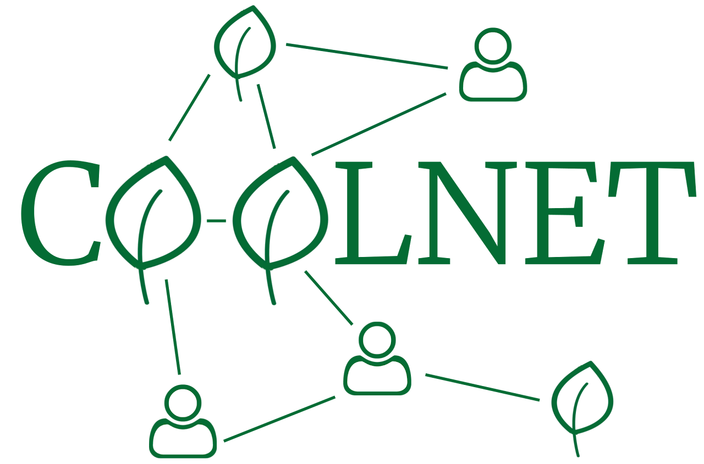
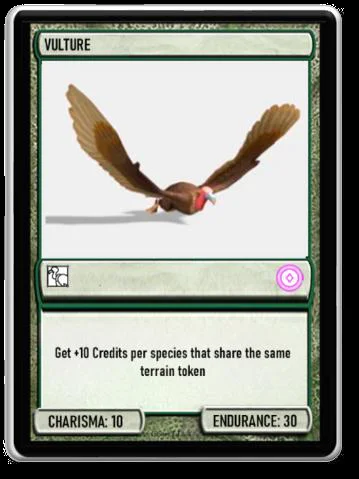
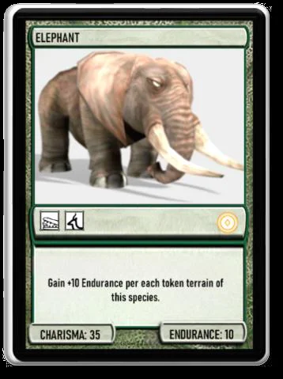
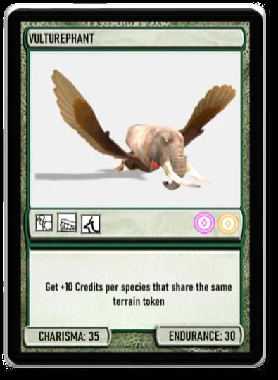
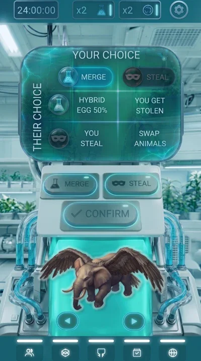
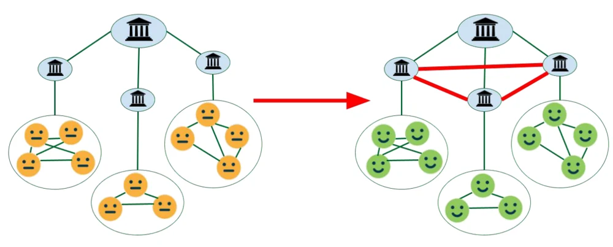

COOLNET
COOperation in Large-scale NETworks
Why do people cooperate, and what would make them do at the scale of a whole society? We build a video game to find out.
For the Frenchies: CORESO, COopération dans les Réseaux de grande échelle, Expérimentation des Structures Optimales.
Question and setup
The causes and solutions of the environmental crisis are known; yet, solutions are not implemented fast enough. This is a cooperation problem: a healthy environment benefits everyone, including those who damage it or don't contribute.
Multiple mechanisms were shown to foster cooperation, but most are limited to small groups. COOLNET looks for structures of social interactions that can foster cooperation at every scale, up to a whole society:
One theory for many mechanisms
We gather cooperation mechanisms from network science, behavioural economics, ecology and psychology, and write them all as an iterated prisoner's dilemma played on the links of a network. An apple-to-apple comparison of hypotheses from usually disconnected fields!
A game as a laboratory
Lab experiments are small; field studies lack experimental control. A game gives both: we aim for thousands of players on a network in controlled conditions. Each mechanism is implemented as a game variant; we can then compare cooperation levels in each independent variant.
- Binding contracts
- Laws and taxes
- Polycentric governance
- Social tipping points
- Multilayer networks
- and more
Nova Fauna, our game
Earth now brings complex life to distant planets. This one only has plants so far, but you can help populate it with the most fantastical animals you can imagine, starting with your own park reserve. Make it worth a trip for interstellar tourists, whose visits keep your park running. Merge species into creatures from your wildest dreams, but only if your neighbouring parks are willing to help... Then breed and clone your sweethearts, trade on the market, and release them into the wild to grow the planet's biodiversity.
Players meet their network neighbours, one at a time, and choose to either try to merge one of their animals with their neighbour's animal to get a new hybrid species, or to steal their neighbour's animal. That's the prisoner's dilemma, played with the animals you dreamt of as a kid. When not pondering whether to play nice, players customise their animals and browse their encyclopedia of species.
Each mod adds a mechanism to test, some by changing the interaction network itself (who plays merge-or-steal with whom). The game is asynchronous: a few minutes a day, over a game lasting 10 to 20 days.




Roadmap
- 2025–26Concept and pre-production.
From twelve game concepts to a first prototype; theoretical framework and experimental design. - 2027Local experiments with 100 to 1,000 players.
A workshop on Gamification of Science in Dublin, 31 May – 2 June 2027. - 2028Online release and large-scale experiments with 10,000+ players.
- 2029–30Results and transfer: papers, policy recommendations and a public symposium. We also hope to turn the game into a workshop for local collective decisions, a similar direction to our COOLAB spin-off.
COOLNET runs from July 2025 to June 2030, funded by a €1 million Prize from the Lopez-Loreta Foundation, with an additional TU Dublin contribution (€1.2 million total).
Team
- Guillaume Falmagne Principal InvestigatorComplex systems and collective behaviour. Formerly Princeton, École Polytechnique, CERN.
- Sergio Romero Senior Game DesignerGame systems and economies.
- Pádraig O'Connor Senior Games ProgrammerMultiplayer games and client-server architecture.
- Akilan Ramakrishnan PhD ResearcherCooperation mechanisms across disciplines.
Joining in 2027: an artist and a postdoctoral researcher.
Our host
COOLNET is set within SOHAM, the Centre for Sociology Of Humans And Machines, joint between Trinity College Dublin and TU Dublin. We work on TU Dublin's Grangegorman campus.
Our partners
Princeton University, the SPIRAL centre at École Polytechnique, and the Potsdam Institute for Climate Impact Research (PIK), SciFunGames, XPForward.
Join us
Game Programmer Intern
Build Nova Fauna's multiplayer features in Unity and C#, test them, and help run playtests. January to June 2027, full time on site in Dublin. Unpaid placement.
See the call →Research interns
Into modelling cooperation on networks, or complex systems more broadly? We're also open to hosting interns on the research side.
Get in touch →- Game Artist: give Nova Fauna's hybrid animals and worlds their look, 4-month contract in early 2027.
- Postdoctoral researcher: model cooperation on multilayer networks and run our large-scale experiments, for three years from mid-2027.
Stay tuned: the calls will be posted here and on LinkedIn.
COOLAB, the COOperation LAB
Play together, learn to cooperate, and improve your whole organisation.
Cooperation drives team performance, but surveys and generic advice don't show where it breaks down. The good news from research: cooperation depends more on the environment than on personality, so structure and awareness can change it. COOLAB turns Nova Fauna into a tool for organisations.
- Play
Everyone plays together and senses how their choices affect the group. Data is anonymised, and each player gets a personal report.
- Evaluate
The game network mirrors the structure of the organisation, which we test against research-inspired alternatives. An automated report shows cooperation levels, group dynamics and routes to progress.
- Improve
Recommendations for low-cost cultural and structural changes, and regular sessions to follow progress.

Who is it for?
Companies integrating teams after a merger, breaking silos, or testing a reorganisation before making it. Public bodies and NGOs aligning stakeholders around common goods issues.
Development stage
We're applying to Enterprise Ireland's Commercialisation Fund PoC and ARC Hub for ICT to adapt Nova Fauna into a product, run first tests, and secure our first customers.
Want to try it with your team? We're looking for pilot partners. Get in touch →